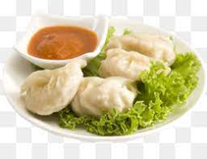

MOMO

Description
Momo is a very delecious dish. It is very popular here in Nepal.
Ingedients
- 1½ pounds ground beef
- 2 cups shredded cabbage
- 1 carrot, shredded
- 1 onion, minced
- 1 egg
- 1 teaspoon salt
- 1 (14 ounce) package wonton wrappers
Steps
- In a large bowl, mix together beef, cabbage, carrot, and onion. Stir in the egg, sugar, salt, soy sauce, and vegetable oil.
- Place a large teaspoonful of filling in the center of a dumpling skin. Moisten the edges of a wonton with a few drops of water. Then fold the dumpling in half, and pinch the edges together to seal. Create a ripple pattern along the pinched edge by pinching and gently pushing together small segments of it. Repeat with remaining dumplings.
- Boil the dumplings in water until they float to the top, about 5 minutes.